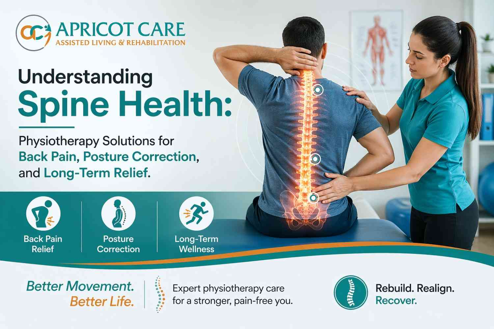

Understanding Spine Health: Physiotherapy Solutions for Back Pain, Posture Correction, and Long-Term Relief


24
APR

Dr. Krutika Bhadane
PT (Neuro), BPTh, MPTh (Neurosciences), 3+ years clinical
experience in neurological rehabilitation
My patient was a 52-year-old software team lead from Kharadi. He had been managing back pain for three years before his daughter finally brought him in. She told me she had watched him stop doing things so gradually that she almost missed it happening. First it was the evening walks. Then the Sunday drives to visit relatives. Then, about eight months before she called us, he had quietly stopped sitting at the dining table for meals. He ate on the sofa because getting up from a chair had become too painful to do in front of anyone.
"He never said it was serious," she told me. "He kept saying it was just age."
This is one of the most common things I hear from families. Not the dramatic collapse or the obvious crisis, but this quiet withdrawal, this slow negotiation a person makes with pain until their world has shrunk so much that even the people closest to them almost do not notice. Back pain, and the spine problems underneath it, have a way of doing that. They are not always loud. But their impact on daily life, on dignity, on family relationships, is enormous. And the tragedy is that most of what causes this kind of suffering is both treatable and, when caught early enough, preventable from getting worse.
What Is Spinal Physiotherapy, and What Does It Actually Treat?
Physiotherapy for spine health is a structured, evidence-based treatment approach in which a trained physiotherapist assesses the underlying cause of back or neck pain and designs a personalised programme of exercises, manual therapy, and postural correction to reduce pain, restore movement, and prevent recurrence.
It is not, to be clear, about heat pads and rest. That is what most people think physiotherapy for back pain involves. In reality, it is active, specific, and when done correctly, it addresses the root problem rather than just quieting the symptom for a few weeks.
Why Does the Spine Break Down? The Anatomy Behind the Pain
The spine is made up of 33 vertebrae stacked in a column, separated by intervertebral discs, which are shock-absorbing structures that cushion movement and protect the nerves running through the spinal canal. Surrounding all of this are layers of muscle, ligament, and connective tissue that provide stability and control movement.
When this system works well, you do not think about it at all. When it does not, the consequences reach into almost every area of physical function.
Back pain becomes chronic, defined as lasting more than 12 weeks, when the underlying mechanical problem has not been properly addressed. The most common causes include disc herniation, where the soft inner material of a spinal disc pushes outward and presses on a nearby nerve; facet joint degeneration, where the small joints connecting vertebrae lose their cartilage and become inflamed; muscle imbalance, where some groups are chronically overloaded while others are underused; and postural dysfunction, where years of sitting, carrying weight, or moving incorrectly have pulled the spine out of its natural alignment.
A critical point that does not get enough attention: the pain itself is often not coming from where the patient points. A person who points to their lower back may have a problem that originates in tight hip flexors, a weak deep core, or restricted thoracic (mid-back) mobility. This is why a proper physiotherapy assessment, not just a scan and a painkiller, is the starting point for real treatment.
Diagram of spinal anatomy showing vertebrae, intervertebral discs, and spinal canal relevant to physiotherapy for back pain and posture correction.
The Condition Most Back Pain Articles Completely Skip: Central Sensitisation
Here is something that gets almost no attention in standard back pain guides, and it matters enormously for patients who have been suffering for more than a few months.
When pain persists over a long period, the nervous system itself undergoes a change. It becomes sensitised, which means it starts amplifying pain signals beyond what the original tissue damage would justify. This is called central sensitisation, and it is one of the reasons why some people with relatively minor structural changes on their MRI experience severe and disabling pain, while others with significant disc degeneration barely feel anything.
Research published in the Journal of Pain (2021) found that central sensitisation is present in a substantial proportion of patients with chronic lower back pain, and that purely structural interventions, whether surgery, injections, or even conventional exercise programmes, often produce disappointing results in these patients because the problem is no longer only in the spine. It is in the way the nervous system has learned to process and amplify the signals coming from that region.
Why does this matter practically? Because if central sensitisation is not recognised and addressed as part of the treatment plan, a patient can do all the right exercises and still not improve the way they should. Physiotherapists trained in pain neuroscience can identify this pattern and adjust the programme accordingly, combining graded exposure to movement, pain education, and carefully calibrated loading to help the nervous system recalibrate. Most general fitness advice and many basic physiotherapy programmes do not account for this at all.
If your loved one has been treated for back pain multiple times without lasting improvement, this may be a significant part of why.
When Should Physiotherapy for Back Pain Start?
The short answer is: as early as possible, and for acute back pain, within the first two to four weeks of onset.
For chronic back pain that has been present for months or years, the answer is simply: now, because every additional month of untreated or inadequately treated spine dysfunction has a compounding cost. Pain alters the way a person moves. Altered movement loads the spine incorrectly. Incorrect loading causes further degeneration. And all the while, if central sensitisation is developing, the nervous system is learning a pattern of amplified pain response that becomes harder to reverse the longer it is left in place.
The concept of a recovery window is not quite the same here as it is in stroke neuroplasticity, because back pain does not involve the same acute brain injury. But the clinical principle is similar and the evidence is clear: early, structured physiotherapy intervention produces better long-term outcomes than delayed treatment.
A systematic review published in The Lancet (2018), which examined data from across the globe on back pain management, concluded that active physiotherapy started early in the course of back pain is significantly more effective than passive treatments like rest, heat, or pain medication alone. The same review found that patients who received structured physiotherapy within the first month of acute back pain were substantially less likely to develop chronic pain than those who managed with medication and waited.
Research published in Spine journal (2022) further confirmed that delay in physiotherapy initiation for acute lower back pain is independently associated with higher rates of chronicity, increased medication use, and lower functional recovery at twelve months.
Physiotherapist performing spinal assessment on a patient in a clinical setting in Pune, illustrating early physiotherapy for back pain and posture correction.
What Most Blogs Say vs. What the Evidence Actually Shows
| Topic | What Most Blogs Say | What Rarely Gets Said |
|---|---|---|
| When to start | Rest first, then try physiotherapy if it does not resolve | Early structured physiotherapy within the first few weeks dramatically reduces the risk of acute pain becoming chronic |
| What causes back pain | A bad disc or a slipped disc | Most chronic back pain involves muscle imbalance, central sensitisation, and postural dysfunction, not a single structural fault |
| Treatment approach | Exercises and stretching | Pain neuroscience education is equally important, especially for chronic pain; the nervous system needs retraining, not just the muscles |
| Posture correction | Sit up straight and the pain will improve | Posture is one factor among several; weak deep stabilisers, hip restrictions, and thoracic stiffness usually matter more |
| Indian context | Not mentioned | Sedentary desk work, long commutes on two-wheelers, and cultural reluctance to rest before pain becomes severe make Indian patients particularly vulnerable to spinal degeneration |
| Recovery duration | Six to eight weeks of exercises and you are fixed | Without addressing the underlying mechanics and movement patterns, pain recurrence within twelve months is common and well-documented |
What Spinal Physiotherapy Actually Involves: Session by Session
After a thorough assessment that includes postural analysis, movement screening, neurological testing of reflexes and sensation, and palpation of the spine and surrounding muscles, the physiotherapist designs a treatment plan matched to the specific problem.
The evidence-based techniques used in clinical spinal physiotherapy include the following.
McKenzie Method (Mechanical Diagnosis and Therapy)
is a systematic approach to classifying the type of spinal problem and identifying the specific directional movements that centralise and reduce the patient's pain. Rather than giving the same exercises to everyone with back pain, McKenzie therapy finds the movement that works for that individual's particular disc or joint pattern. Research published in Physical Therapy journal (2020) found that McKenzie Method produced significantly better outcomes than general exercise for patients with disc-related lower back pain.
Motor Control Exercise (Core Stabilisation Training)
addresses the deep stabilising muscles of the spine, particularly the transversus abdominis and multifidus, which are consistently found to be inhibited and poorly coordinated in people with chronic back pain. A Cochrane Review (2016, updated 2021) confirmed that motor control exercise produces significant improvements in pain and function in chronic lower back pain patients, with benefits maintained at twelve-month follow-up.
Manual Therapy
includes spinal joint mobilisation and manipulation, which involve hands-on techniques to restore normal movement to restricted spinal joints, reduce muscle guarding, and improve the mechanical loading of the spine. Research in the Journal of Orthopaedic and Sports Physical Therapy (2021) found that combining manual therapy with exercise produces better outcomes than either approach alone for both acute and chronic back pain.
Postural Correction and Ergonomic Retraining
identifies the specific postural habits and environmental factors, including workstation setup, sleep positions, and daily movement patterns, that are loading the spine incorrectly. Correcting these without also changing the underlying movement habits is why many postural interventions fail. A physiotherapist assesses both the physical capacity and the functional context together.
Graded Activity and Exposure
is particularly important for patients who have developed fear-avoidance behaviour, meaning they have become afraid of movement because movement has been associated with pain. Graded exposure systematically reintroduces avoided movements in a controlled, progressively loaded way, retraining both the musculoskeletal system and the nervous system's threat response.
Dry Needling and Myofascial Techniques
target trigger points, which are areas of sustained muscle contraction that refer pain to distant locations and are common contributors to both localised back pain and referred pain into the legs or shoulders. These techniques are used alongside active rehabilitation, not as standalone treatments.
How Much Physiotherapy Does Back Pain Actually Need?
The question families often ask is how many sessions it takes to fix the problem. The honest answer is that the question itself reflects a misunderstanding of what spinal physiotherapy is for.
According to clinical guidelines from the National Institute for Health and Care Excellence, updated in 2020, patients with chronic lower back pain should receive a course of structured physiotherapy involving a minimum of eight to twelve sessions over a six to eight week period for initial management. Research published in Pain journal (2022) found that patients receiving twelve or more sessions of structured physiotherapy showed 40% better functional outcomes at six months compared to those receiving four or fewer sessions.
But the sessions themselves are only part of the equation. A 2023 study in the British Journal of Sports Medicine found that the single strongest predictor of long-term back pain recovery was not the number of clinic sessions but consistent daily home exercise after formal treatment ended. Patients who continued structured daily home exercise for six months after discharge had significantly lower recurrence rates and better long-term function than those who stopped exercising once the pain resolved.
This is where families play a genuinely important role, and where we will return shortly.
A Realistic Spine Recovery Timeline
Timeline infographic showing back pain and spinal physiotherapy recovery stages from weeks 1 through 12 plus months, relevant to chronic back pain treatment in India.
| Timeframe | What Is Happening in the Body | What to Realistically Expect |
|---|---|---|
| Week 1 to 4 | Inflammation begins to reduce with activity modification; deep stabiliser muscles start being recruited with correct cueing | Pain levels begin to decrease with movement; understanding of posture and ergonomics improves; the patient learns which movements help and which aggravate |
| Month 1 to 3 | Motor control patterns improve; spinal joint mobility increases; postural muscle endurance begins to build | Sitting and standing tolerance increases; referred pain into legs or arms often reduces; daily function improves noticeably |
| Month 3 to 6 | Structural adaptations in muscle and connective tissue consolidate; movement patterns become more automatic | Most patients with acute or subacute back pain reach near-full function in this window with consistent effort |
| Month 6 to 12 | Maintenance phase; recurrence risk is highest if home exercise stops | Strength and endurance consolidate; ergonomic habits become second nature; the focus shifts from rehabilitation to prevention |
| 12+ Months | Long-term management phase for patients with structural degeneration or chronic sensitisation | Regular review physiotherapy, technology-assisted home programmes, and sustained exercise prevent deterioration and manage flare-ups |
The India-Specific Reality That Most Articles Ignore
The Sedentary Lifestyle Problem and Why It Hits Indian Patients Differently
India has seen a sharp rise in sedentary work patterns over the past two decades, particularly in technology hubs like Pune, Hyderabad, and Bengaluru where large numbers of professionals spend eight to twelve hours daily at computer workstations. Many of them also commute on two-wheelers, which places sustained flexion load on the lumbar and thoracic spine in conditions of vibration and poor road quality.
The consequence of this lifestyle profile is that spinal degeneration is presenting in Indian patients at younger ages than previous generations. A patient walking into a physiotherapy clinic in Pune with significant disc-related back pain at age 35 is not unusual anymore. This population needs physiotherapy, ergonomic education, and sustained exercise not as a short-term course of treatment but as a long-term health practice.
The Urban-Rural Access Gap
Trained musculoskeletal and spinal physiotherapists, like neurological physiotherapists, are concentrated in urban centres. Patients in smaller cities and rural Maharashtra often have access only to basic physiotherapy services or no physiotherapy at all after being discharged from a hospital following a spinal episode. Many rely on unqualified practitioners or self-manage with painkillers and rest, both of which are associated with higher rates of chronicity.
This is why telerehabilitation for spinal conditions, where a qualified physiotherapist can assess, prescribe, and supervise an exercise programme remotely, is not a lesser option for these patients. In many cases, it is the only clinically sound option available to them.
Language and Cultural Barriers in Spine Rehabilitation
A 2026 study in Healthcare on rehabilitation challenges in India noted that language and cultural factors are consistently underestimated as barriers to effective musculoskeletal care. Explaining pain neuroscience to a patient in a language that is not their primary one, or asking them to challenge deeply held cultural beliefs about bed rest being the correct treatment for back pain, requires not just clinical knowledge but cultural communication skill.
For patients in Pune and the Deccan region who speak Marathi primarily, being able to discuss their condition, understand their home exercise programme, and ask questions in their own language is not a luxury. It affects whether they follow through on treatment or not.
How Family Members Can Help or Hurt Spine Recovery
Spine rehabilitation requires sustained daily effort from the patient. Family members influence that effort more than they usually realise.
What Caregivers Should Do
- Learn the basics of the patient's home exercise programme so you can gently encourage consistency without nagging; understanding why the exercises matter helps with this
- Help create the conditions for exercise to happen, whether that is clearing space, timing it with a daily routine, or simply being present for accountability
- Support ergonomic changes in the home: a chair at the right height, a firm mattress, removal of objects that require repeated bending from floor level
- Take pain complaints seriously without amplifying them; validate the experience without reinforcing the belief that movement is dangerous
- Report changes in pain patterns, any new weakness or numbness in the limbs, or bowel and bladder changes to the physiotherapist immediately, as these can indicate nerve involvement that needs urgent review
What Caregivers Must Avoid
- Insisting the patient rest completely because activity seems to make them wince; for most spinal conditions, appropriate movement is the treatment, not its opposite
- Taking over physical tasks entirely to spare the patient effort; losing functional capacity through disuse makes the spine problem worse over time
- Minimising the problem by attributing it entirely to age and suggesting nothing will help; this framing is both inaccurate and clinically harmful
- Expressing impatience with the pace of recovery; spinal rehabilitation is not a linear process and flare-ups during recovery are normal, not failures
- Allowing the patient to skip their home exercises without follow-through on the days when they say they do not feel like it; consistency during low-pain days is what prevents the next high-pain episode
What Technology Is Changing in Spinal Physiotherapy in 2025
Telerehabilitation for Back Pain: Clinically Validated
A 2025 systematic review published in World Journal of Advanced Research and Reviews found that telerehabilitation for musculoskeletal conditions including chronic lower back pain produced outcomes equal to or better than in-person physiotherapy for a majority of patients, particularly for exercise-based interventions where the physiotherapist provides real-time guidance via video. The convenience of receiving physiotherapy without travel is especially significant for patients with severe pain, limited mobility, or caregiving responsibilities that make clinic attendance difficult.
At Apricot Care in Pune, online physiotherapy consultations for spine and back pain are conducted by the same clinical team that sees patients in the clinic, using the same assessment protocols and outcome measures. The quality of care does not change because the medium does.
AI-Assisted Spine Rehabilitation
A 2025 systematic review in PMC examined AI-powered platforms used in musculoskeletal rehabilitation and found that tools using motion analysis through a standard smartphone camera can provide real-time feedback on exercise form with clinically meaningful accuracy. Patients using these platforms between sessions maintained better exercise form, performed more consistent repetitions, and showed higher adherence rates than those using standard printed exercise sheets.
For spinal conditions where incorrect exercise technique can aggravate symptoms rather than improve them, this kind of real-time feedback is not a gimmick. It is a genuine clinical safety and efficacy tool.
The Emotional Cost of Chronic Back Pain That Nobody Talks About Enough
Chronic back pain is one of the leading causes of depression and anxiety globally, and the relationship runs in both directions. Pain causes depression, and depression amplifies pain. Research consistently finds that depression affects 30 to 40% of people with chronic pain conditions, and that the presence of depression is one of the strongest predictors of poor treatment outcomes, including in back pain.
The mechanism is partly neurological. Chronic pain and depression share overlapping brain circuits, particularly in areas governing threat perception, emotional regulation, and the body's stress response. A patient who is depressed is not simply unmotivated. They are experiencing a neurobiological state that makes the nervous system harder to retrain and makes pain signals harder to suppress.
This is why treating the spine without addressing the psychological dimension of chronic pain is incomplete care. Pain neuroscience education, which helps patients understand that pain is not always an accurate signal of tissue damage, combined with psychological support where needed, is a recognised and evidence-supported component of comprehensive spine rehabilitation.
Families often notice the emotional toll before the patient will acknowledge it. If your loved one has become increasingly withdrawn, reluctant to engage with life, or dismissive about whether things will improve, please do not assume this is about personality. It is almost certainly about pain, and it is something that can and should be addressed alongside physiotherapy, not after it.
Key Takeaways
- Early physiotherapy intervention, ideally within the first two to four weeks of acute back pain, dramatically reduces the risk of the problem becoming chronic and is significantly more effective than rest and pain medication alone
- Most chronic back pain involves a combination of structural issues, muscle imbalance, postural dysfunction, and central sensitisation; treating only one of these without addressing the others is why so many patients do not get lasting relief
- A minimum of eight to twelve structured physiotherapy sessions over six to eight weeks is the evidence-based recommendation for chronic lower back pain, with 40% better functional outcomes at six months compared to fewer sessions
- The strongest predictor of long-term back pain recovery is not the number of clinic sessions but consistent daily home exercise after formal treatment ends
- Central sensitisation, the nervous system's learned amplification of pain signals, affects a significant proportion of chronic back pain patients and must be identified and addressed as part of the treatment plan
- In India, sedentary technology work, two-wheeler commuting, and urban-rural access gaps in physiotherapy make early and sustained spine rehabilitation both more necessary and more difficult to access than in many other contexts
- Family members are a critical part of spine rehabilitation, and the most helpful thing they can do is support daily exercise consistency and avoid reinforcing the belief that rest and avoidance of movement are the correct responses to pain
- Post-pain depression and anxiety affect 30 to 40% of chronic back pain patients, directly worsen outcomes, and must be addressed alongside physiotherapy, not treated as a separate problem that can wait until the physical pain resolves
Closing
Back pain has a way of making people feel alone with it. It is not the kind of thing people talk about at family gatherings or bring up with colleagues. It is quiet, private, and the adjustments people make to accommodate it, the chairs they stop sitting in, the journeys they stop taking, tend to happen so gradually that even the people who love them most sometimes only notice in retrospect how much has changed.
The families I have worked with who have seen real, lasting improvement in their loved one's spine health are not the ones who found the best painkiller or the most impressive scan. They are the ones who stopped waiting for the pain to resolve on its own, sought a proper assessment from a qualified spinal physiotherapist, and then treated rehabilitation as a shared family commitment rather than a medical appointment the patient attends alone.
So here is a question worth sitting with today: if your loved one has been managing back pain for months, making quiet accommodations, shrinking their world to avoid what hurts, what would it mean for your whole family if that changed? And what is actually stopping you from finding out whether that change is possible?
Physiotherapy for back pain, posture correction, and long-term spine health are among the core services at Apricot Care, Kharadi, Pune. If you or someone in your family is managing chronic or recurring back pain, our clinical team is available for in-clinic or online assessments.
References
- Hartvigsen J et al. What low back pain is and why we need to pay attention. The Lancet, 2018.
- Nijs J et al. Central sensitisation in chronic musculoskeletal pain. Journal of Pain, 2021.
- Hayden JA et al. Exercise therapy for chronic low back pain. Cochrane Review, updated 2021.
- Childs JD et al. Manual therapy combined with exercise for back pain. Journal of Orthopaedic and Sports Physical Therapy, 2021.
- Foster NE et al. Prevention and treatment of low back pain. Pain journal, 2022.
About
author
Dr. Krutika
Bhadane is a Neurophysiotherapist and Clinical Physiotherapist at
Apricot Care, Kharadi, Pune, with 3 years of experience in adult
neurological rehabilitation.